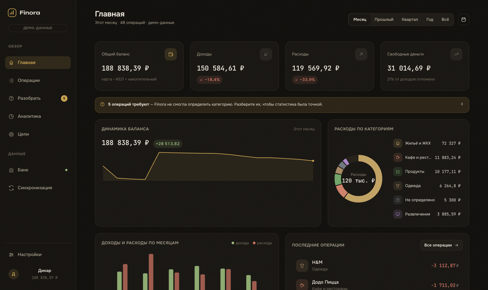
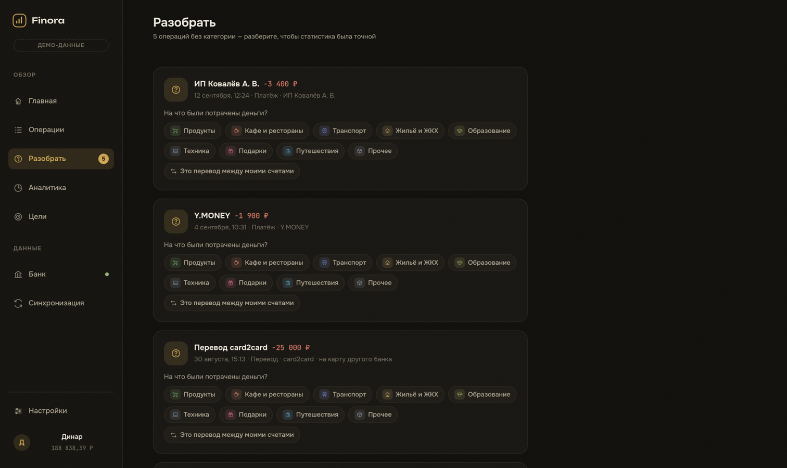
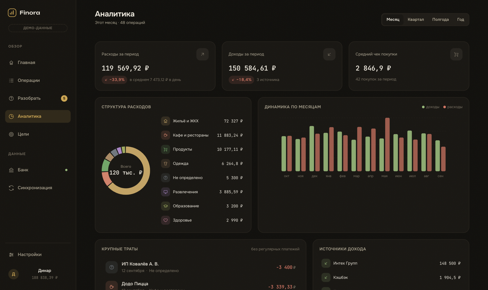
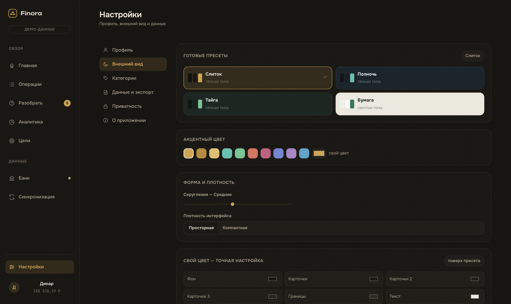

Finora собирает операции из банка, раскладывает их по категориям и показывает честную картину: куда уходят деньги и как накопить на важное. Всё — локально, без облаков.
У современного человека операции в двух-трёх банках и десятке сервисов. Приложения банков показывают список, но не картину — а сторонние агрегаторы просят доступ к данным навсегда.
Банковское приложение показывает выписку — длинный список, который никто не перечитывает. Оно не отвечает на главный вопрос: на что реально уходят деньги и что с этим делать. Переводы, подписки, кэшбэк и возвраты смешиваются в один поток, и картина месяца собирается уже вручную — в таблице или в голове.
Сервисы учёта финансов работают через облако: выписки хранятся на чужих серверах, а «умный анализ» — это отправка ваших данных сторонней модели.
Польза от AI-анализа расходов очевидна, но облачные модели получают полную финансовую историю. Это цена, которую платить не хочется.
Настоящее приложение для macOS. Операции приходят из банка, обрабатываются локально и превращаются в понятную статистику и цели.
История из Т-Банка за год: покупки, переводы, подписки, кэшбэк. Поиск, фильтры, любой период — и всё это в едином интерфейсе.
Каждая операция автоматически получает категорию. Finora показывает структуру расходов, динамику по месяцам и крупные траты.
Копить на ноутбук, поездку или квартиру — с видимым прогрессом и понятным темпом «столько-то в месяц». В будущем — советы AI, где сэкономить.
Локальная модель отвечает на любые финансовые вопросы прямо на Mac: подсказывает, где сэкономить под конкретную цель, и разбирает жизненные ситуации — без отправки данных куда-либо.
Т-Банк отдаёт историю операций. В прототипе — реалистичный демонстрационный источник с годом синтетических данных.
Нормализация и классификация прямо на компьютере: категории, переводы между счетами, очередь «Разобрать» для неясных операций.
Дашборд, аналитика, цели и наблюдения о привычках. Позже — локальная AI-модель, которая подскажет, где сэкономить.
Это не настройка, а принцип архитектуры: данные не покидают устройство, потому что приложению просто некуда их отправлять.
Дизайн в духе лучших банковских приложений: много воздуха, аккуратная типографика, живые графики. Четыре темы с полной настройкой цветов.

Главные цифры за любой период: баланс, доходы, расходы и свободные деньги.
Finora честно говорит «не знаю», когда не может определить категорию. Один клик — и операция на своём месте.


Структура расходов, динамика за 12 месяцев, крупные траты и сравнение периодов.
Четыре темы: Слиток, Полночь, Тайга и светлая Бумага. Акцент, скругления и плотность настраиваются — с историей изменений и своими пресетами.

Категории расставляет быстрый движок правил: он предсказуем, работает офлайн и не ошибается молча — спорные операции попадают в очередь «Разобрать».
Локальная языковая модель уже работает: модель Qwen3.5-4B докачивается одной кнопкой из настроек и отвечает прямо на Mac. Чат-советник свободно разбирает жизненные ситуации («трачу 10 тысяч в неделю на подарки — это нормально?»), считает план накопления под конкретную цель и стримит ответ по мере генерации. Цифры всегда считает приложение — модель только формулирует вывод, поэтому не выдумывает суммы.
Без модели чат продолжает отвечать встроенными правилами — и честно пишет об этом перед ответом. Облачный AI не предусмотрен вовсе.
Интерактивный прототип с годом реалистичных операций: подключите демо-банк, разберите операции, настройте тему под себя.
Студент 1 курса кафедры ИУ5, МГТУ им. Н.Э. Баумана. Придумал Finora, потому что устал не понимать, куда уходят деньги, — и не хотел отдавать финансовую историю облачным сервисам ради красивых графиков.